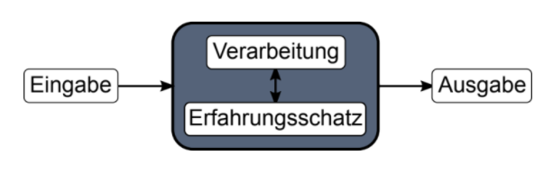
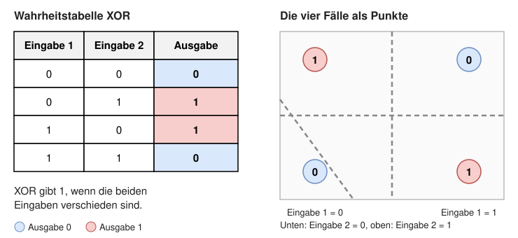

Unterrichtsplan
Ablauf aller zehn Doppellektionen nach AVIVA (Ankommen, Vorwissen aktivieren, Informieren, Verarbeiten, Auswerten). Gleiche Fassung wie in worksheets/md/KI_Planung.md.
01Doppellektion 1 · Was ist KI?90 Min.
Heute können Sie: KI von Programmen mit festen Regeln unterscheiden, KI, maschinelles Lernen, Deep Learning und generative KI einordnen und schwache und starke KI sowie die vier KI-Typen unterscheiden.
Ist jedes automatisch arbeitende Programm eine KI?
Warum das wichtig ist: Empfehlungen im Streamingdienst, Navigation, Fotofilter, Chatbots: Fast alles wird heute «KI» genannt, und Filme zeigen Roboter, die denken und fühlen. Was davon ist Realität, und was ist Science-Fiction? Wer KI einordnen kann, durchschaut Werbeversprechen und Schlagzeilen.
Lehrperson: InputEinzelarbeitTandem oder GruppeKlasse gemeinsamErgebnis
| Phase | Wer | Was | Min. |
|---|---|---|---|
| Ankommen«Wann ist ein System intelligent?»5 Min. | Lehrperson | Stellt die Frage «Wann nennen Sie ein System intelligent?» und zeigt zwei Saugroboter: einer fährt feste Bahnen nach einem Programm, einer erstellt beim Fahren eine Karte der Wohnung. | 1 |
| Einzeln | Notieren Sie, welcher Roboter für Sie intelligenter wirkt, und ein Kriterium, woran Sie Intelligenz erkennen. | 4 | |
| Ergebnis | Ein persönliches Kriterium für «intelligent». | ||
| Vorwissen aktivierenRegeln für Katze oder Hund schreiben10 Min. | Tandem | Schreiben Sie Wenn-dann-Regeln auf, mit denen ein Programm Katzen von Hunden auf Fotos unterscheiden könnte. Prüfen Sie die Regeln an drei Gegenbeispielen, etwa einer Katze mit langen Ohren oder einem Hund in Katzenpose. | 6 |
| Lehrperson | Sammelt zwei Regeln und je ein Gegenbeispiel an der Tafel und hält fest: Regeln von Hand zu finden ist mühsam und lückenhaft. | 4 | |
| Ergebnis | Die Erfahrung, dass Regeln von Hand Lücken haben. Sie motiviert, ein System aus Beispielen lernen zu lassen. | ||
| InformierenKI, maschinelles Lernen und Deep Learning einordnen25 Min. | Lehrperson | Zeigt die Grafik «Programmierung durch Menschen» und «Datengetriebene Programmierung». Menschen: Eingabe → definierte Regeln → Ausgabe, zum Beispiel ein Schachprogramm. Daten: Daten → maschinelles Lernen → Regeln, zum Beispiel ein Spamfilter, der aus markierten Mails lernt. Verbindet mit der Übung «Regeln für Katze oder Hund schreiben»: Statt Regeln zu schreiben, geben wir Beispiele. | 6 |
| Einzeln | Ordnen Sie Taschenrechner, Spamfilter, Ampel mit festem Zeitplan und Gesichtsentsperrung am Handy einer der beiden Seiten zu. | 1 | |
| Lehrperson | Zeigt die Einteilung der Begriffe als ineinander liegende Kreise: KI, maschinelles Lernen, Deep Learning, generative KI. Erklärt jede Ebene kurz; die Lernenden tragen in der Tabelle der Kursseite zu jedem Begriff ein eigenes Beispiel ein (mögliche Beispiele: Schachprogramm mit festen Regeln, Spamfilter, Bilderkennung, ChatGPT). Betont: Nicht jedes KI-System lernt aus Daten. Das Bildprojekt gehört zum maschinellen Lernen. | 6 | |
| Lehrperson | Zeigt die Meilensteine der KI von 1950 bis 2022 und erzählt zu jedem einen Satz. Markiert, ob er auf Regeln von Menschen oder auf Lernen aus Daten beruht. | 5 | |
| Lehrperson | Führt schwache und starke KI und die vier KI-Typen ein: reaktive KI, KI mit begrenztem Gedächtnis, Theory of Mind, selbstbewusste KI. Heutige Systeme gehören zu den Typen 1 und 2 und sind schwache KI; starke KI gibt es nicht. Mögliche Beispiele zur Kontrolle: Typ 1 Schachcomputer Deep Blue, Typ 2 selbstfahrende Autos, Chatbots und Bilderkennung, Typ 3 und 4 bisher nur Forschung und Science-Fiction. | 6 | |
| Einzeln | Nennen Sie zu jedem der vier Typen in der Tabelle auf der Kursseite ein eigenes Beispiel und notieren Sie, ob es das heute gibt, mit kurzer Begründung. | 1 | |
| Ergebnis | Notizen zu Regeln und Daten, zur Einteilung der Begriffe, zu den Meilensteinen und zu den vier Typen als Grundlage für die Verarbeitung. | ||
| VerarbeitenMeilensteine, eigene Beispiele und Asimovs Gesetze40 Min. | Gruppe | Meilensteine: Jede Gruppe erhält zwei bis drei Meilensteine, klärt in einer Minute, was neu war, und entscheidet, ob er eher auf Regeln von Menschen oder auf Daten beruht. Hängen Sie die Meilensteine als Klasse in der richtigen Reihenfolge auf und markieren Sie sie mit «Regeln» oder «Daten». | 10 |
| Tandem | Wählen Sie vier eigene Beispiele aus Alltag, Film oder Zukunft (zum Beispiel Navigationsapp, Sprachassistent, Staubsaugerroboter, HAL 9000, Terminator). Ordnen Sie jedes ein: Regeln oder Daten? Welche Ebene (KI, maschinelles Lernen, Deep Learning, generative KI)? Typ 1 bis 4? Schwache oder starke KI? Begründen Sie jede Einordnung in einem Satz im Antwortfeld. | 15 | |
| Lehrperson | Stellt die drei Gesetze der Robotik von Isaac Asimov (1942) vor und zeigt das Trolley-Problem (Weichenstellerfall, Wikipedia) und überträgt es auf den Fall «Schulweg»: Ein selbstfahrendes Taxi muss ausweichen, weil zwei Kinder auf die Fahrbahn rennen. Drei Möglichkeiten: geradeaus bremsen (Kinder gefährdet), nach rechts in die Mauer (Fahrgast gefährdet), nach links (Person auf dem Velo gefährdet). Betont, dass es keine richtige Lösung gibt. | 3 | |
| Gruppe | Entscheiden Sie im Fall «Schulweg» zuerst allein und vergleichen Sie dann in Vierergruppen: Wo gehen die Entscheidungen auseinander? Welches Gesetz greift, und widersprechen sich die Gesetze? Wer legt fest, was «Schaden» heisst und wessen Schaden mehr zählt? Das sind Regeln von Menschen: Lassen sie sich einfach in ein System einbauen, das aus Daten lernt? Halten Sie zwei Argumente fest. | 8 | |
| Einzeln | Erklären Sie im Antwortfeld die Begriffe KI, maschinelles Lernen, Deep Learning und generative KI in je einem eigenen Satz. | 4 | |
| Ergebnis | Eine Zeitleiste mit Markierung «Regeln» oder «Daten», vier begründete Einordnungen und zwei Argumente zu den Gesetzen der Robotik. | ||
| AuswertenEinordnungen prüfen und Begriffe klären10 Min. | Klasse | Je zwei Tandems stellen eine Einordnung vor. Die Klasse prüft: Stimmt der Typ, und ist es wirklich schwache KI? | 5 |
| Einzeln | Beantworten Sie im Antwortfeld: Ist jedes automatisch arbeitende Programm eine KI? Begründen Sie mit der Grafik «Regeln oder Daten» und einem eigenen Beispiel. | 3 | |
| Lehrperson | Fasst zusammen: Regeln von Menschen allein sind noch kein Lernen, heutige KI ist schwache KI, und das Bildprojekt gehört zum maschinellen Lernen. Ausblick auf Doppellektion 2: Wie lernt ein System? | 2 | |
| Ergebnis | Eine begründete Antwort auf die Leitfrage und vier eingeordnete Beispiele. |
Am Ende sichtbar: Vier selbst gewählte Beispiele, eingeordnet nach Regeln oder Daten, Ebene, KI-Typ und schwach oder stark, mit Begründung.
02Doppellektion 2 · Wie lernt KI?90 Min.
Rückblick: In Doppellektion 1 haben Sie KI von Programmen mit festen Regeln unterschieden und KI, maschinelles Lernen, Deep Learning und generative KI eingeordnet. Immer wieder ging es darum, ob die Regeln von Menschen stammen oder aus Daten gelernt werden, etwa beim Schachprogramm und beim Spamfilter. Heute fragen wir: Wie lernt ein System überhaupt aus Daten?
Heute können Sie: Wissensbasierte und lernende Systeme sowie drei Lernarten an Beispielen unterscheiden.
Woher kommt die Entscheidungsregel: von Menschen oder aus Daten?
Warum das wichtig ist: Ein Kind lernt Hund und Katze nicht aus einer Regel, sondern aus vielen Beispielen. Auch KI-Systeme lernen, aber auf drei ganz verschiedene Arten. Wer weiss, woraus ein System lernt, versteht auch, was es falsch lernen kann.
Lehrperson: InputEinzelarbeitTandem oder GruppeKlasse gemeinsamErgebnis
| Phase | Wer | Was | Min. |
|---|---|---|---|
| AnkommenWas hilft einem System beim Lernen?5 Min. | Lehrperson | Zeigt zwei Karten mit demselben Motiv, eine ohne und eine mit Klassenname (zum Beispiel «Werkzeug»). | 1 |
| Einzeln → Tandem | Notieren Sie einzeln, welche zusätzliche Information einem System hilft, das lernen soll, und vergleichen Sie zu zweit. | ||
| Ergebnis | Eine These, wozu ein Name (Label) gut ist. | ||
| Vorwissen aktivierenWoher kommt die Regel?5 Min. | Tandem | Knüpfen Sie an Doppellektion 1 an. Überlegen Sie zu zweit, woher beim Schachprogramm und beim Spamfilter die Regel kommt (von Menschen oder aus Daten), und vervollständigen Sie den Satz «Ein System lernt aus Daten, wenn …». | 3 |
| Lehrperson | Schreibt zwei Formulierungen an die Tafel. | 2 | |
| Ergebnis | Eine gemeinsame Arbeitsdefinition von «aus Daten lernen». | ||
| InformierenWissensbasiert oder lernend? Akinator und Filmlandkarte20 Min. | Lehrperson | Führt das EVA-Prinzip (Eingabe, Verarbeitung, Ausgabe) neu ein und zeigt die EVA-Grafik (Eingabe → Verarbeitung mit Erfahrungsschatz → Ausgabe) und stellt ein wissensbasiertes System daneben: Menschen legen Fakten und Wenn-dann-Regeln fest, etwa in einem Entscheidungsbaum oder im Fragespiel Akinator, das System wendet sie an. Fragen: Wer hat die Regel festgelegt? Was geschieht mit einem Fall, an den niemand gedacht hat? Bei einem lernenden System stammt der Erfahrungsschatz aus Daten und kann sich verändern, etwa bei den Filmempfehlungen von Netflix. | 3 |
| Tandem | Erklären Sie die EVA-Grafik in einfachen Worten am Beispiel Spamfilter (Eingabe, Erfahrungsschatz, Ausgabe, was eine neue Erfahrung verändert) und halten Sie die Erklärung im Antwortfeld der Kursseite fest. Vergleichen Sie mit dem Schachprogramm aus Doppellektion 1. | 2 | |
| Tandem | Wissensbasiert: Spielen Sie zwei Runden Akinator (en.akinator.com) mit einer ausgedachten Figur, keine Person aus Ihrem Umfeld. Halten Sie in den Antwortfeldern der Kursseite fest, welche Fragen gestellt werden, wie Ihre Antworten zum Ergebnis führen und was bei einer seltenen oder erfundenen Figur geschieht. | 5 | |
| Tandem | Lernend: Erkunden Sie in der Filmlandkarte (Link auf der Kursseite) einen Film, den Sie kennen: Was haben die nächsten Nachbarn gemeinsam? Färben Sie nach Genre und nach vorhergesagter Bewertung und wechseln Sie den User Index. Halten Sie in den Antwortfeldern der Kursseite fest, welche Muster das System in welchen Daten gefunden haben könnte. | 5 | |
| Lehrperson | Stellt drei Lernsignale kurz an je einem Beispiel vor: Labels (Smiley-Spiel), Ähnlichkeit (K-Means), Rückmeldung (NIM). | 3 | |
| Tandem | Ordnen Sie jedem Beispiel das Lernsignal zu. | 2 | |
| Ergebnis | Zwei Beobachtungen (Akinator, Filmempfehlung) und eine Zuordnung Beispiel → Lernsignal als Rüstzeug für die Memory-Runden. | ||
| VerarbeitenMemory, Smiley, K-Means und NIM50 Min. | Lehrperson | Erklärt anhand von Kapitel 4 der Kursseite («Gruppen-Memory: Aufgabe und Ablauf») die Memory-Regeln und verteilt die Rollen (Agent:in, Kartenleitung, zwei Beobachtende, Zeit und Protokoll). | |
| Gruppe | Spielen Sie drei Runden mit Rollenwechsel. Runde 1 mit Labels: Die Kartenleitung zeigt beschriftete Karten, der Agent ordnet neue Karten zu. Runde 2 ohne Labels: Sortieren Sie die Karten nach Ähnlichkeit und benennen Sie die Merkmale der Gruppen. Runde 3 mit Rückmeldung: Suchen Sie verdeckte Paare, +1 pro Treffer und 0 pro Fehlversuch, und passen Sie die Strategie nach jeder Rückmeldung an. Pro Runde vier Minuten spielen, eine Minute notieren: Die Aufgabe jeder Runde steht in Kapitel 5 bis 7, die Beobachtung kommt in das Antwortfeld des Kapitels. | 15 | |
| Einzeln | Testen Sie im Smiley-Spiel und in Quick, Draw! je eine Zeichnung (kein persönliches Motiv; Zeichnungen können in einen öffentlichen Datensatz eingehen) und beschreiben Sie, was das System aus den Labels lernt. | 10 | |
| Tandem | Wählen Sie in K-Means die Verteilung «Gaussian Mixture» und beobachten Sie, wie die Mittelpunkte wandern. | 10 | |
| Tandem | Spielen Sie NIM in der verlinkten Lernstrecke und beobachten Sie, wie das System nach Gewinn oder Verlust seine Züge anpasst. | 10 | |
| Einzeln | Finden Sie im digitalen Begriffscheck Begriff und passende Rückmeldung als Paare. | 5 | |
| Ergebnis | Pro Memory-Runde eine Beobachtung im Antwortfeld der Kursseite. | ||
| AuswertenDie drei Lernarten vergleichen10 Min. | Einzeln | Beantworten Sie im Antwortfeld «Was fällt auf, wenn Sie die drei Lernarten vergleichen?»: Was lernen die Systeme aus Labels, aus Ähnlichkeit, aus Rückmeldung? Ordnen Sie NIM begründet zu und nennen Sie die Lernart des Bildprojekts (überwacht, weil die Trainingsbilder Klassennamen erhalten). | |
| Lehrperson | Klärt: In Runde 3 lernte der Mensch, nicht die KI; NIM zeigt das KI-Beispiel. | 2 | |
| Ergebnis | Drei Beobachtungen, je eine pro Lernart, und die Zuordnung des Bildprojekts. |
Am Ende sichtbar: Ein Vergleich wissensbasierter und lernender Systeme sowie drei Beobachtungen zu Lernarten.
03Doppellektion 3 · Wie entscheidet ein Neuron?90 Min.
Rückblick: In Doppellektion 2 haben Sie wissensbasierte Systeme (Akinator) mit lernenden Systemen (Filmempfehlungen) verglichen und drei Lernsignale kennengelernt: Labels (Smiley-Spiel), Ähnlichkeit (K-Means) und Rückmeldung (NIM). Die Grafik zeigt noch einmal, wie ein lernendes System aufgebaut ist. Offen blieb, was in der dunklen Box steckt. Heute öffnen Sie diese Box und untersuchen ihren kleinsten Baustein: ein einzelnes künstliches Neuron.

Heute können Sie: Erklären, wofür ein Neuron da ist, Gewicht und Bias erklären, die Lernregel beschreiben, sagen was genau gelernt wird und die XOR-Grenze begründen.
Kann eine einzige Rechenregel jede Ja/Nein-Aufgabe lösen?
Warum das wichtig ist: Ihr Handy erkennt Ihr Gesicht, eine App bestimmt Pflanzen aus einem Foto. Dahinter steht ein einfacher Baustein, das künstliche Neuron, dem Vorbild der Nervenzelle nachempfunden. Heute sehen Sie, dass dabei nichts Geheimnisvolles geschieht: Es wird gerechnet, verglichen und korrigiert.
Lehrperson: InputEinzelarbeitTandem oder GruppeKlasse gemeinsamErgebnis
| Phase | Wer | Was | Min. |
|---|---|---|---|
| AnkommenDas Warnsignal: Regel vermuten5 Min. | Lehrperson | Stellt das Warnsignal vor: Es soll nur angehen, wenn beide Sensoren auslösen. | 1 |
| Einzeln | Vermuten Sie die Regel in Worten und notieren Sie für die vier möglichen Eingaben 00, 01, 10 und 11, ob das Signal angeht. | ||
| Ergebnis | Eine Vermutung für die Regel mit vier Tabellenzeilen. | ||
| Vorwissen aktivierenEingabe und Label benennen10 Min. | Tandem | Benennen Sie zu zweit am Warnsignal, was die Eingabe und was das Label (die richtige Antwort) ist. Schreiben Sie die vier Eingaben in eine Tabelle und ergänzen Sie die Ausgabe für UND, dann für ODER und für XOR. | |
| Ergebnis | Drei Wahrheitstabellen mit je vier Zeilen und die Stelle, an der sich XOR von ODER unterscheidet. | ||
| InformierenVon der Nervenzelle zum Perzeptron15 Min. | Lehrperson | Erklärt zuerst am Schwimmbad-Beispiel (Kursseite Kapitel 1), wofür ein Neuron da ist: ein kleiner Entscheider, der aus mehreren Zahlen Ja oder Nein macht; Gewichte sagen, wie wichtig ein Faktor ist, der Bias ist die Grundhaltung. Projiziert dann die Nervenzell-Grafik und die Perzeptron-Grafik und erklärt am Vorbild Nervenzelle die Bausteine: Eingaben, Gewichte, Summe, Schwelle, Ausgabe. Schreibt «Summe = x₁·w₁ + x₂·w₂ + b» und «ab Summe 0 feuert das Neuron» an und rechnet (1, 1) und (1, 0) mit Gewichten 1 und 1 und Bias −1.5 vor (Summen 0.5 und −0.5). Sagt in einem Satz, was später gelernt wird: nur Gewichte und Bias, also der Erfahrungsschatz des Neurons. | 10 |
| Einzeln → Tandem | Rechnen Sie (0, 0) und (0, 1) selbst und prüfen Sie im Tandem. | 5 | |
| Ergebnis | Eine vollständige UND-Tabelle: Summen −1.5, −0.5, −0.5, 0.5 und Ausgaben 0, 0, 0, 1. | ||
| VerarbeitenGewichte und Bias berechnen und ausprobieren50 Min. | Einzeln | Bearbeiten Sie das Arbeitsblatt: Ausgaben berechnen und einen Lernschritt rechnen (Gewichte 0.2 und 0.2, Bias −0.5, Eingabe (1, 1), Lernrate 0.2). | 10 |
| Tandem | Arbeiten Sie das Notebook «Ein Neuron entscheidet» durch (Zeitmarken beachten, Regler und Selbstchecks direkt bedienen): im Schwimmbad-Beispiel ein Neuron als Entscheider einstellen, Nervenzelle und Neuron vergleichen, ein Neuron von Hand für AND, OR und NAND einstellen (bei jeder falschen Zeile nennt die Ausgabe, was zu tun ist), das Neuron per Klick Beispiel für Beispiel lernen lassen und dabei erkennen, dass nur Gewichte und Bias gelernt werden, an echten Messdaten zwei Pflanzenarten unterscheiden und XOR in fünf Schritten untersuchen (Lernen lassen, Punkte ansehen, selbst einstellen, vier Bedingungen, Ausweg). Tragen Sie Ihre Einstellungen und Ergebnisse laufend ins Protokoll der Kursseite ein (Kapitel «Im Notebook»). | 35 | |
| Tandem | Erklären Sie einander, was ein Gewicht und was der Bias bewirkt. | 5 | |
| Ergebnis | Eine von Hand eingestellte und eine gelernte AND-Regel sowie die Beobachtung, dass XOR nicht gelingt. | ||
| AuswertenAusgabe bestimmen und an XOR scheitern10 Min. | Einzeln | Bestimmen Sie ohne Computer die Ausgabe für (0, 1) mit Gewichten 1 und 1 und Bias −1.5. Beantworten Sie dann im Antwortfeld der Kursseite: Was bewirken Gewicht und Bias? Wie korrigiert sich ein Neuron selbst? Warum scheitert ein einzelnes Perzeptron an XOR (zwei Sätze)? | |
| Lehrperson | Zeigt die XOR-Grafik (Tabelle und vier Punkte) und die vier Bedingungen an der Tafel und lasst die Klasse den Widerspruch nachvollziehen: Die beiden mittleren Bedingungen zusammen ergeben w₁ + w₂ + b > 0, die letzte verlangt < 0. Fragt: Liegt das an der Lernregel oder am Bau des Neurons? Wie viele Linien bräuchte man? | 3 | |
| Ergebnis | Eine korrekte Rechnung und eine Erklärung zu XOR im Antwortfeld. |
Am Ende sichtbar: Eine nachvollziehbare Rechnung + Erklärung zu Bias, Lernregel (was genau gelernt wird) und XOR.
Zeit: Das Notebook hat einen Kern von ca. 35 Minuten (Zeitmarken ⏱: Einstieg 2, Wofür ein Neuron 4, Neuron aufbauen 3, Nervenzelle 3, Zahlen sehen 2, von Hand einstellen 5, Was lernt ein Neuron 4, Alle Runden lernen 3, Pflanzen 3, XOR 6). Der Abschnitt «Zusatz · Ein Neuron liest echte Ziffern» ist Vertiefung für Schnelle oder zu Hause und zählt nicht zur Planung.
04Doppellektion 4 · Warum mehrere Neuronen?90 Min.
Rückblick: In Doppellektion 3 haben Sie ein Neuron eingestellt: Es gewichtet seine Eingaben, addiert einen Bias und gibt 1 oder 0 aus. Es kann sich selbst korrigieren, scheitert aber an XOR. Die Grafik wiederholt, warum: XOR gibt 1, wenn die beiden Eingaben verschieden sind. Zeichnet man die vier Fälle als Punkte, liegen die beiden mit Ausgabe 1 diagonal gegenüber. Ein einzelnes Neuron kann nur eine gerade Linie ziehen, und jede solche Linie lässt mindestens auf einer Seite Punkte beider Farben zurück. Heute lösen Sie dieses Problem mit mehreren Neuronen und klären, welche Daten ein Netz beim Lernen sehen darf.

Heute können Sie: Eine Zwischenschicht erklären und Training, Validierung und Test trennen.
Wie lösen mehrere einfache Entscheidungen das XOR-Problem?
Warum das wichtig ist: Ein Neuron zieht nur eine gerade Linie. Gesichter, Sprache oder Verkehrsschilder erkennen Systeme mit vielen Neuronen in Schichten. Dazu kommt die Frage, die jedes KI-Projekt betrifft: Funktioniert das Netz auch bei Fällen, die es nie gesehen hat? Beides brauchen Sie für Ihr Projekt.
Lehrperson: InputEinzelarbeitTandem oder GruppeKlasse gemeinsamErgebnis
| Phase | Wer | Was | Min. |
|---|---|---|---|
| AnkommenXOR mit einer Linie trennen?5 Min. | Lehrperson | Zeigt die XOR-Punkte (00 und 11 mit Ziel 0, 01 und 10 mit Ziel 1). | 1 |
| Einzeln | Zeichnen Sie die Punkte auf Papier, versuchen Sie mit einer Linie die Klassen zu trennen und notieren Sie, was sich ändern müsste. | ||
| Ergebnis | Ein Vorschlag, wie mehr als eine Gerade helfen könnte. | ||
| Vorwissen aktivierenAND-Rechnung wiederholen10 Min. | Tandem | Erklären Sie zu zweit die AND-Rechnung aus Doppellektion 3 (Gewichte, Bias, Summe, Ausgabe) und rekonstruieren Sie die vier XOR-Zielwerte ohne Hilfsmittel. Rechnen Sie einander eine Zeile vor. | |
| Ergebnis | Eine korrekt erklärte AND-Rechnung und die vier XOR-Zielwerte. | ||
| InformierenZwei Zwischenfragen bauen das XOR-Netz15 Min. | Lehrperson | Baut an der Tafel das Netz aus zwei Zwischenfragen auf: h₁ = OR (mindestens ein Eingang 1), h₂ = NAND (nicht beide 1); der Ausgang kombiniert beide mit AND. Verfolgt die Zeile (1, 0): OR ergibt 1, NAND ergibt 1, AND ergibt 1. Stellt klar: Dieses Netz hat festgelegte Gewichte. Beim Training findet ein Netz die Gewichte selbst, wie das einzelne Neuron in Doppellektion 3. Zeigt dann am Ziffernbeispiel (Kapitel 2 der Kursseite), wie ein echtes Netz aussieht: 64 Pixel → 16 versteckte Neuronen → 10 Ausgaben, 1210 gelernte Zahlen. | 10 |
| Tandem | Ergänzen Sie die Zeilen (0, 0), (0, 1) und (1, 1) paarweise. | 5 | |
| Ergebnis | Eine vollständige Tabelle x₁, x₂, OR, NAND, Ausgang = XOR. | ||
| VerarbeitenNetze kombinieren, Daten aufteilen, Thema wählen50 Min. | Tandem | Bearbeiten Sie das Notebook «Mehrere Neuronen kombinieren»: Regeln im Regler vergleichen, das konstruierte XOR-Netz erklären, ein Netz XOR selbst lernen lassen (1, 2 und 4 versteckte Neuronen, verschiedene Startwerte) und ein Netz Ziffern erkennen lassen (Neuronenzahl 2 bis 32 vergleichen, ein Bild durch das Netz verfolgen). Tragen Sie die Ergebnisse ins Protokoll der Kursseite ein (Kapitel 1 und 2). | 25 |
| Tandem | Bearbeiten Sie das Notebook «Daten fair aufteilen»: Training, Validierung und Test mit der Prüfungsanalogie klären, das Datenleck am Apfelbeispiel finden und die drei Werte desselben Netzes vergleichen. | 15 | |
| Tandem | Wählen Sie im Tandem ein Thema aus dem Ideenpool und genau zwei Klassen und skizzieren Sie die fünf Gruppen T1, T2, V1, P1 und P2 (2 Klassen × 5 Gruppen × 8 Fotos = 80). Prüfen Sie die Skizze im Notebook «Daten fair aufteilen» (Abschnitt «Den eigenen Datenplan prüfen»; Aufgabe am Ende der Seite «Neuronale Netze»). | 10 | |
| Ergebnis | Eine erklärte XOR-Tabelle, begründete Rollen von Training, Validierung und Test und ein vorläufiger Datenplan. | ||
| AuswertenDen Weg durch das Netz erklären10 Min. | Tandem | Erklären Sie einem anderen Tandem den Weg von (1, 0) durch das Netz und beantworten Sie im Antwortfeld der Kursseite, was die Zwischenschicht leistet und warum Gegenstände oder Personen zwischen den Datengruppen getrennt bleiben. Zeigen Sie der Lehrperson Ihren Datenplan zur Freigabe. | |
| Lehrperson | Gibt die Fotoregeln mit: beide Klassen unter gleichen Bedingungen (Hintergrund, Licht), acht verschiedene Fotos je Gruppe, Gruppen vor dem Fotografieren festlegen, Personen nur mit Einverständnis, Fotos bis zur nächsten Projekt-Doppellektion. | 3 | |
| Ergebnis | Ein freigegebener Datenplan und der Auftrag, 80 Fotos zu sammeln. |
Am Ende sichtbar: XOR-Erklärung + vorläufiger Datenplan für fünf unabhängige Gruppen.
Zeit: Beide Notebooks haben einen Kern (Mehrere Neuronen kombinieren 25 Minuten, Datenaufteilung 15 Minuten, Zeitmarken ⏱: Einstieg 2, Regler 3, Aufbauen 3, Üben 4, XOR lernt selbst 4, Ziffern erkennen 6, Foto zur Klasse 3). Bei Zeitnot im Notebook «Daten fair aufteilen» zuerst das Rechenbeispiel am Ende von «Üben» streichen, danach die Zuordnungsübung kürzen; Rollen-Tabelle, Datenleck und die Drei-Werte-Grafik bleiben. Der Datenplan wird von den Tandems mit der Checkliste am Notebook-Ende selbst geprüft; die Lehrperson sieht stichprobenartig nach.
05Doppellektion 5 · Projektstart: Daten vorbereiten90 Min.
Rückblick: In Doppellektion 4 haben Sie erklärt, wie eine Zwischenschicht XOR löst, Training, Validierung und Test getrennt und ein Thema mit vorläufigem Datenplan gewählt. Heute beginnt Ihr eigenes Projekt: Sie formulieren eine prüfbare Frage und bereiten Ihre Fotos als Daten für Ihr Netz vor.
Heute können Sie: Eine prüfbare Frage formulieren und die eigenen Daten kontrollieren.
Helfen vielfältigere Trainingsbilder bei neuen Exemplaren?
Warum das wichtig ist: Ab heute bauen Sie selbst ein Bildmodell zu einem Thema, das Sie interessiert. Ob es später funktioniert, entscheidet sich schon jetzt bei den Daten: Schlechte Daten ergeben ein schlechtes Modell, auch mit dem besten Netz.
Lehrperson: InputEinzelarbeitTandem oder GruppeKlasse gemeinsamErgebnis
| Phase | Wer | Was | Min. |
|---|---|---|---|
| AnkommenEin leichtes und ein schwieriges Foto5 Min. | Tandem | Legen Sie je ein leichtes und ein schwieriges Foto Ihrer Anwendung nebeneinander. Beschreiben Sie dem Tandem in einem Satz, woran Sie die Klasse erkennen und was den schwierigen Fall schwierig macht. | |
| Ergebnis | Zwei Beispielfotos mit je einem Erkennungsmerkmal. | ||
| Vorwissen aktivierenGleiches Exemplar, gleiche Gruppe10 Min. | Tandem | Erklären Sie sich gegenseitig, warum Fotos desselben Exemplars in derselben Gruppe bleiben und was bei A und B verglichen wird (A: ein Exemplar je Klasse, B: zwei, gleiche Bildzahl). Zählen Sie Ihre mitgebrachten Fotos je Klasse und Gruppe (Soll: 8) und markieren Sie Lücken. | |
| Ergebnis | Eine Zähltabelle 2 Klassen × 5 Gruppen mit markierten Lücken. | ||
| InformierenAuftrag, Raster und der Weg vom Bild zum Netz15 Min. | Lehrperson | Erklärt Auftrag, Zeitplan und die fünf Reflexionen, zeigt das Bewertungsraster (zehn Kompetenzen, 30 Punkte: Abgabe 18, Gespräch 12) und das ZIP-Sichern. Erklärt die Kette Foto → 224 × 224 Pixel → eingefrorenes MobileNet (1280 Merkmale) → unser trainierbares Netz (16 Neuronen) → Klasse. | 10 |
| Einzeln | Zeichnen Sie die Kette und markieren Sie, was fest ist und was lernt. | 5 | |
| Ergebnis | Eine Skizze der Kette mit markiertem trainierbarem Teil. | ||
| VerarbeitenLernlabor und eigene Fotos im Fotostudio50 Min. | Tandem | Durchlaufen Sie das Lernlabor mit den Übungsdaten: Daten prüfen, A und B vergleichen, ein Bild verfolgen, Vorhersagen lesen. | 15 |
| Tandem | Tragen Sie im Fotostudio zu jedem Foto Klasse, Gruppe und Quelle ein, prüfen Sie die Vorschau, verarbeiten Sie die Bilder und laden Sie die JSON herunter. Setzen Sie im Versuchsnotebook MODUS = 'EIGENE_DATEN' und die Klassennamen, laden Sie die JSON und prüfen Sie die Tabelle (für T1, T2 und V1 je 8 und 8 Bildern) sowie das Gruppenbild: Stimmen Klassen, Gruppen und Exemplare? Bei Fehlermeldungen hilft der Abschnitt «Hilfe» am Notebook-Ende. Bei Zeitreserve folgt der erste A/B-Lauf. | 35 | |
| Ergebnis | Ein geprüfter Datensatz mit 80 Bildern und fünf Gruppen und die heruntergeladene JSON. | ||
| AuswertenZIP sichern und Reflexion 1 schreiben10 Min. | Lehrperson | Zeigt, wo das ZIP unter «Sichern & abgeben» liegt und wohin es später abgegeben wird. | 2 |
| Tandem | Schreiben Sie im Journal Reflexion 1 (Anwendung, Klassenregel, Vermutung) und Reflexion 2 (Gruppen, Quellen, ein Datenproblem), markieren Sie ein Datenproblem oder eine offene Frage und laden Sie das ZIP herunter. | ||
| Ergebnis | Reflexion 1–2 und ein erstes ZIP. |
Am Ende sichtbar: Geprüfte Daten + Reflexion 1–2 + erste ZIP-Sicherung.
Zeit: Das Lernlabor besteht aus fünf Abschnitten à 3 Minuten (Zeitmarken ⏱); der Zusatz zum Abschlusstest ist freiwillig. Im Lernlabor ist bei den einfachen Übungsformen Gleichstand von A und B zu erwarten; das ist ein gültiges Ergebnis, kein Fehler.
06Doppellektion 6 · Projekt: fair vergleichen90 Min.
Rückblick: In Doppellektion 5 haben Sie Ihre Frage formuliert, eigene Fotos im Fotostudio aufgenommen und kontrolliert und Ihren Stand als ZIP gesichert. Heute vergleichen Sie zwei Varianten (A und B) unter gleichen Bedingungen und wählen eine aus, ohne den Abschlusstest anzusehen.
Heute können Sie: A und B kontrolliert vergleichen und eine Auswahl vor Testeinsicht begründen.
Welche Beobachtung würde unsere Vermutung stützen – und welche nicht?
Warum das wichtig ist: Firmen werben mit «Unsere KI erkennt 98 % richtig». Heute lernen Sie, solche Zahlen kritisch zu lesen: Wurde fair verglichen? Was wurde verändert, was blieb gleich? Mit derselben Methode beantworten Sie Ihre eigene Forschungsfrage.
Lehrperson: InputEinzelarbeitTandem oder GruppeKlasse gemeinsamErgebnis
| Phase | Wer | Was | Min. |
|---|---|---|---|
| AnkommenProjektstand wiederherstellen5 Min. | Tandem | Stellen Sie Ihr gesichertes ZIP unter «Notizen & Projekt wiederherstellen» wieder her, führen Sie die Vorbereitung und den Datenimport erneut aus und legen Sie ein Tagesziel fest (A/B-Lauf, Vorhersagen lesen, Auswahl begründen). | |
| Ergebnis | Ein bereiter Stand und ein Tagesziel. | ||
| Vorwissen aktivierenWas unterscheidet A und B?10 Min. | Tandem | Erklären Sie dem Tandem ohne Unterlagen, was sich zwischen A und B verändert und was gleich bleibt (Bildzahl, Netz, Epochen, Startwert, Validierungsbilder) und wofür V1 und P1/P2 dienen. Schreiben Sie Ihre Vermutung für den Vergleich auf (A besser, B besser oder gleich) mit einem Grund. | |
| Ergebnis | Eine schriftliche Vermutung mit Begründung. | ||
| InformierenTrefferquoten richtig lesen10 Min. | Lehrperson | Rechnet ein Zahlenbeispiel vor: 12 von 16 Bildern richtig sind 75 %, 14 von 16 sind 87.5 %, der Unterschied beträgt 12.5 Prozentpunkte. Erklärt, warum ein Unterschied bei 16 Bildern und einem Lauf nur eine Beobachtung ist, und zeigt die Abfolge Vermuten → Lauf → Bilder lesen → Auswahl. Der Test bleibt geschlossen. | 8 |
| Einzeln | Rechnen Sie 13 von 16 gegen 13 von 16. | 2 | |
| Ergebnis | Sichere Anwendung von Trefferquote und Prozentpunkten. | ||
| VerarbeitenA und B vergleichen, Vorhersagen untersuchen55 Min. | Tandem | Führen Sie die A/B-Zelle aus und lesen Sie die Trefferquoten auf V1 und den Unterschied in Prozentpunkten ab. | 15 |
| Tandem | Untersuchen Sie bei A und B die 16 Vorhersagen: Welche Bilder sind richtig, wo ist das Netz unsicher, gibt es Fehler? Notieren Sie mindestens ein konkretes Bild als Beleg. | 15 | |
| Tandem | Sammeln Sie eine alternative Erklärung (Hintergrund, Licht, Exemplar) und tragen Sie die Auswahl A oder B mit Begründung ins Journal ein (Reflexion 3). Nach der Hälfte wechseln Bedienung und Erklärung. | 20 | |
| Tandem | Prüfen Sie die Auswahl gegenseitig. | 5 | |
| Ergebnis | Reflexion 3 mit Werten, einem Bildbeleg, einer alternativen Erklärung und einer Auswahl mit Grund. | ||
| AuswertenAuswahl begründen (Reflexion 3)10 Min. | Tandem | Lesen Sie Reflexion 3 gegenseitig oder tauschen Sie mit einem anderen Tandem: Passen Zahlen, Belege und Auswahl zusammen? Markieren und beheben Sie Lücken und laden Sie das ZIP herunter. | |
| Lehrperson | Kündigt an, dass der Test erst nach der gesicherten Auswahl freigegeben wird. | 2 | |
| Ergebnis | Eine geprüfte Reflexion 3 und ein gesichertes ZIP. |
Am Ende sichtbar: A/B-Ergebnisse + begründete Auswahl in Reflexion 3; noch kein Abschlusstest.
07Doppellektion 7 · Projekt: prüfen und urteilen90 Min.
Rückblick: In Doppellektion 6 haben Sie A und B fair verglichen, Vorhersagen untersucht und Ihre Auswahl vor der Testeinsicht begründet (Reflexion 3). Heute prüfen Sie die gewählte Variante einmal mit dem Abschlusstest und beschreiben ihre Grenzen mit Belegen.
Heute können Sie: Die gewählte Variante abschliessend prüfen und Grenzen mit Belegen beschreiben.
Was bleibt von unserer Vermutung auf neuen Testgruppen übrig?
Warum das wichtig ist: Ein KI-System sollte erst eingesetzt werden, wenn es an neuen Fällen geprüft wurde, etwa ein Modell, das auf Röntgenbildern Auffälligkeiten sucht. Heute machen Sie diesen Test ehrlich: einmal, ohne Nachbessern, mit allen Fehlern. Das ist mehr wert als eine schöne Zahl.
Lehrperson: InputEinzelarbeitTandem oder GruppeKlasse gemeinsamErgebnis
| Phase | Wer | Was | Min. |
|---|---|---|---|
| AnkommenAuswahl vor dem Test belegen5 Min. | Tandem | Zeigen Sie der Lehrperson oder dem Nachbartandem die vor Testeinsicht festgehaltene Auswahl samt Begründung (Reflexion 3). | |
| Ergebnis | Eine sichtbar gesicherte Auswahl. | ||
| Vorwissen aktivierenWarum nach dem Test nichts mehr ändern?10 Min. | Tandem | Erklären Sie zu zweit, warum die Auswahl nach Testeinsicht nicht mehr geändert wird (der Test würde sonst zu einer zweiten Validierung), und nennen Sie die Gruppen, die noch nie ausgewertet wurden. | |
| Ergebnis | Eine Erklärung in zwei Sätzen. | ||
| InformierenFreigabe-Checkliste10 Min. | Lehrperson | Zeigt die Freigabe-Checkliste (Reflexion 3 vollständig, Variante und Begründung stimmen mit der Zelle überein) und erklärt, wie der Testwert zu lesen ist: 32 Bilder von zwei neuen Exemplaren je Klasse, eine vorsichtige Aussage. Zeigt, wie drei Beispiele untersucht werden (ein typischer Treffer, ein überraschender Treffer oder ein schwieriger Fall); Fehler zu erfinden ist nicht erlaubt. | 7 |
| Tandem | Haken Sie die Checkliste im Tandem ab. | 3 | |
| Ergebnis | Eine abgehakte Checkliste und die Freigabe durch das Tandem. | ||
| VerarbeitenAbschlusstest, Beispiele und Reflexion 455 Min. | Tandem | Tragen Sie Variante und Begründung in die Testzelle ein, setzen Sie TEST_FREIGEBEN = True und führen Sie die Zelle aus. Lesen Sie Trefferquote, Verwechslungstabelle und Beispiele. | 20 |
| Tandem | Schreiben Sie Reflexion 4 (Trefferquote mit Bildzahl, drei Beispiele, was nicht geprüft wurde, Nutzen und Grenzen) und Reflexion 5 (Antwort auf die Forschungsfrage, nächster Versuch, Arbeitsteilung, Quellen und KI-Hilfen). | 20 | |
| Tandem | Wählen Sie ein Bild und erklären Sie: «Was wäre anders, wenn dieses Objekt schon im Training vorkam?» Prüfen Sie das Abgabepaket gegenseitig (Journal, Notebook mit Ausgaben, Originalfotos, JSON, Protokoll). | 15 | |
| Ergebnis | Ein Testergebnis, Reflexion 4–5 und ein vollständiges ZIP. | ||
| AuswertenSelbsteinschätzung und Abgabe10 Min. | Tandem | Schätzen Sie sich im Bewertungsraster selbst ein, markieren Sie Kompetenzen mit fehlendem Beleg und ergänzen Sie, was möglich ist, ohne Auswahl oder Test zu ändern. Laden Sie die vollständige ZIP-Sicherung herunter. | |
| Lehrperson | Nennt Abgabekanal, Frist (vor Beginn der Doppellektion 8) sowie Dauer und Reihenfolge der Gespräche. | 2 | |
| Ergebnis | Ein fertiges Abgabepaket und eine bekannte Gesprächszeit. |
Am Ende sichtbar: Abschlusstest + vollständiges Journal + geprüftes Abgabepaket.
08Doppellektion 8 · Abgabe und Tandemgespräche90 Min.
Rückblick: In Doppellektion 7 haben Sie die gewählte Variante mit dem Abschlusstest geprüft, Ihr Journal vervollständigt und das Abgabepaket kontrolliert. Heute erklären Sie Ihr Projekt im Tandemgespräch und trainieren das Modell eines anderen Tandems nach.
Heute können Sie: Das ganze Projekt gemeinsam erklären und das Modell eines anderen Tandems nachtrainieren.
Kommen wir mit den Daten und Einstellungen eines anderen Tandems zum gleichen Ergebnis?
Warum das wichtig ist: In Studium und Beruf zählt nicht nur, dass etwas funktioniert, sondern dass Sie es erklären und begründen können. Heute zeigen Sie im Gespräch, dass Sie Ihr Projekt verstanden haben, und prüfen, ob ein anderes Tandem mit seinen Daten wirklich zum selben Ergebnis kommt, so wie es in der Forschung üblich ist.
Lehrperson: InputEinzelarbeitTandem oder GruppeKlasse gemeinsamErgebnis
| Phase | Wer | Was | Min. |
|---|---|---|---|
| AnkommenReihenfolge, Gespräche und zugeteiltes Projekt5 Min. | Lehrperson | Bestätigt die Abgaben, nennt Reihenfolge und Dauer der Gespräche, teilt jedem Tandem das Abgabe-ZIP eines anderen Tandems zu und erklärt Reproduktionsprüfung und Fallcheck: Die Gespräche laufen nach diesen Minuten parallel. | 4 |
| Tandem | Notieren Sie Ihr Gesprächsfenster und das Tandem, dessen Projekt Sie nachprüfen. | ||
| Ergebnis | Jedes Tandem kennt Zeitfenster, Ablauf und das zu prüfende Projekt. | ||
| Vorwissen aktivierenDrei Stichpunkte fürs Gespräch5 Min. | Einzeln | Rufen Sie für das Gespräch und die Reproduktionsprüfung drei Stichpunkte aus Ihrem Projekt ab: Welche Daten und Labels hatten Sie? Was war ein Datenproblem? Welche Grenze oder welcher Fehler war sichtbar? Die Gespräche laufen bereits parallel. | |
| Ergebnis | Drei Stichpunkte als Erinnerungsstütze. | ||
| InformierenAufträge lesen5 Min. | Einzeln | Lesen Sie auf der Kursseite die Anleitung zur Reproduktionsprüfung und den Auftrag Fallcheck und notieren Sie Fragen schriftlich, ohne die laufenden Gespräche zu unterbrechen. | |
| Ergebnis | Eine Liste offener Fragen. | ||
| VerarbeitenReproduktionsprüfung, Fallcheck und eigenes Gespräch70 Min. | Tandem | Reproduktionsprüfung in einem privaten Browserfenster: Stellen Sie das zugeteilte Projekt wieder her, prüfen Sie die Daten, trainieren Sie A und B mit denselben Einstellungen nach, wiederholen Sie mit drei Startwerten und prüfen Sie den Abschlusstest mit der Variante des Originals. Vergleichen Sie Datenprüfsumme und Werte mit dem Versuchsprotokoll und schreiben Sie den Reproduktionsbericht. Laden Sie am Ende das Abgabepaket herunter und reichen Sie es ein. | 45 |
| Tandem | Fallcheck: Wählen Sie einen der drei fiktiven Fälle (Bewerbungen, Schule, Kredit): Welche Daten braucht das Modell? Was könnte schiefgehen? Wer trägt die Folgen? Welche Massnahme ist überprüfbar? Halten Sie Ihre Empfehlung fest. | 20 | |
| Tandem | Zu Ihrem Gesprächsfenster pausieren Sie die Arbeit. Im Gespräch erklären beide das Projekt: ein Bild durch das Modell, eine Daten- oder Versuchsentscheidung, ein Ergebnis samt Grenze und die Übertragung auf einen neuen Fall. Alle Gespräche enden vor der gemeinsamen Auswertung. | 5 | |
| Ergebnis | Ein bewertetes Gespräch, ein eingereichter Reproduktionsbericht mit nachtrainiertem Notebook und ein bearbeiteter Fallcheck. | ||
| AuswertenBericht prüfen, Frage für Doppellektion 105 Min. | Tandem | Prüfen Sie, dass der Reproduktionsbericht eingereicht ist, sichern Sie den unbenoteten Fallcheck und notieren Sie eine Frage für «KI & Gesellschaft». | |
| Ergebnis | Ein eingereichter Reproduktionsbericht, ein gesicherter Fallcheck und eine Frage für Doppellektion 10. |
Am Ende sichtbar: Bewertetes Tandemgespräch + eingereichter Reproduktionsbericht + unbenoteter Fallcheck; keine nachträgliche Projektänderung.
09Doppellektion 9 · Wie entstehen Sprachmodelle?90 Min.
Rückblick: In Doppellektion 8 haben Sie Ihr Bildprojekt im Tandemgespräch erklärt und das Modell eines anderen Tandems nachtrainiert. Dabei lernte ein Netz aus Beispielen: Bilder gehen hinein, eine Klasse kommt heraus. Heute geht es um Sprache: Wie kann ein Modell Text erzeugen, und stimmt, was es sagt?
Heute können Sie: Den Einfluss von Kontext und Beispielen untersuchen und Grenzen der Analogie nennen.
Bedeutet eine plausible Fortsetzung auch eine richtige Aussage?
Warum das wichtig ist: Chatbots schreiben Texte, die überzeugend klingen, und erfinden manchmal trotzdem Dinge. Wie kann das sein? Mit einem kleinen Modell sehen Sie selbst, wie aus Wahrscheinlichkeiten Sätze entstehen und warum plausibel nicht dasselbe ist wie wahr.
Lehrperson: InputEinzelarbeitTandem oder GruppeKlasse gemeinsamErgebnis
| Phase | Wer | Was | Min. |
|---|---|---|---|
| Ankommen«Heute gehen wir …»5 Min. | Lehrperson | Schreibt «Heute gehen wir …» an die Tafel. | 1 |
| Einzeln → Klasse | Schreiben Sie zwei Fortsetzungen und lesen Sie sie vor; die Klasse sammelt die Unterschiede in Wortwahl, Länge und Ton. | ||
| Ergebnis | Eine Sammlung verschiedener Fortsetzungen desselben Satzanfangs. | ||
| Vorwissen aktivierenPapierexperiment: reihum Wörter schreiben10 Min. | Gruppe | Papierexperiment in Gruppen von drei bis vier Personen mit demselben Satzanfang auf zwei Blättern: Reihum schreibt jede Person ein Wort, und das Blatt wird so gefaltet, dass nur die letzten zwei Wörter sichtbar bleiben (Runde A, etwa 12 Wörter). Wiederholen Sie das mit vier sichtbaren Wörtern (Runde B). Lesen Sie beide Texte vor: Welcher klingt sinnvoller, und warum? Das Papagei-Modell macht dasselbe mit Zahlen (Kapitel 2 der Kursseite). | |
| Ergebnis | Zwei Texte und eine Aussage zum Einfluss des Kontexts. | ||
| InformierenPapagei-Modell: das nächste Wort15 Min. | Lehrperson | Erklärt am Papagei-Beispiel, wie ein Modell das nächste Wort aus der Häufigkeit von Wortfolgen in früheren Texten vorhersagt. Grenzt moderne Sprachmodelle ab: Tokens, viel grösserer Kontext und ein trainiertes neuronales Netz. Zeigt an einem Beispiel, dass «wahrscheinlich» nicht «wahr» heisst. | 12 |
| Einzeln | Notieren Sie zwei Unterschiede zwischen dem Papagei-Modell und einem modernen Sprachmodell. | 3 | |
| Ergebnis | Zwei Unterschiede als Grundlage für die Stationen. | ||
| VerarbeitenPapagei-Stationen und Soekia50 Min. | Tandem | Bearbeiten Sie die von der Lehrperson ausgewählten Papagei-Stationen und halten Sie fest, wie sich die Fortsetzung mit mehr Kontext verändert. | 25 |
| Tandem | Verändern Sie in Soekia jeweils nur eine Grösse (Kontext oder Wortwahl), vergleichen Sie die Texte und sichern Sie einen gelungenen und einen problematischen Text mit Beleg. | 20 | |
| Tandem | Verbinden Sie Ihre Beobachtungen mit dem Papierexperiment und beantworten Sie: Ist eine plausible Fortsetzung auch wahr? «Human or Not» wird nur bei schulischer Freigabe eingesetzt und ersetzt dann zehn Minuten Soekia. | 5 | |
| Ergebnis | Ein dokumentierter Vergleich mit zwei Texten und einer Aussage zu «plausibel ≠ wahr». | ||
| AuswertenTexte erklären, Papagei und Netz verbinden10 Min. | Einzeln | Erklären Sie im Antwortfeld anhand Ihrer zwei Texte in drei Sätzen, was gelang, was problematisch war und warum Plausibilität keine Richtigkeit garantiert. Nennen Sie zwei Grenzen des vereinfachten Papagei-Modells. | 3 |
| Lehrperson | Brücke zu den neuronalen Netzen: Zeigt die Grafik «Papagei-Modell und neuronales Sprachmodell». Gleiches Ziel (das nächste Token vorhersagen), aber das Netz speichert sein Wissen in Gewichten statt in einer Tabelle, behandelt ähnliche Wörter ähnlich (Wörter als Zahlen), nutzt viel längeren Kontext und wird wie das Neuron aus Doppellektion 3 trainiert, nur mit Milliarden Gewichten. Betont: Das ist mehr als Zählen. Es bleibt dabei: Das Modell prüft nicht, ob etwas wahr ist. | 3 | |
| Tandem | Beantworten Sie im Antwortfeld «Warum ist ein neuronales Sprachmodell mehr als reine Statistik? Welche Grenze bleibt?»: Was sagt die Papagei-Tabelle zu «Das Kätzchen verfolgt die …», was kann ein Netz tun, in dem Katze und Kätzchen ähnliche Zahlen haben? | 2 | |
| Lehrperson | Fasst zusammen: Sprachmodelle sagen das nächste Token im Kontext voraus und prüfen nicht automatisch, ob eine Aussage wahr ist. Ausblick auf Doppellektion 10: Wer trägt die Folgen? | 2 | |
| Ergebnis | Ein belegter Textvergleich, zwei Grenzen und eine Begründung, warum neuronale Sprachmodelle mehr sind als reine Statistik. |
Am Ende sichtbar: Dokumentierter Vergleich + zwei Grenzen des vereinfachten Modells + Begründung, warum neuronale Sprachmodelle mehr sind als Statistik.
10Doppellektion 10 · Wer trägt die Folgen?90 Min.
Rückblick: In Doppellektion 9 haben Sie gesehen, dass ein Sprachmodell das nächste Wort aus Beispieltexten vorhersagt, zuerst als Papagei-Modell mit Zählen, dann als neuronales Netz. Eine plausible Fortsetzung ist dabei nicht automatisch wahr. Heute fragen Sie, was passiert, wenn die Beispiele selbst einseitig sind: Wer trägt die Folgen?
Heute können Sie: Eine Benachteiligung erklären und eine überprüfbare Gegenmassnahme abwägen.
Wann wird aus einer Modellvorhersage ein gesellschaftliches Problem?
Warum das wichtig ist: Programme entscheiden mit, etwa bei Empfehlungen, Bewerbungen oder Kreditprüfungen. Behandelt ein Modell bestimmte Gruppen schlechter, trägt jemand die Folgen. Heute prüfen Sie, wann aus einer Vorhersage ein gesellschaftliches Problem wird und was man dagegen tun kann.
Lehrperson: InputEinzelarbeitTandem oder GruppeKlasse gemeinsamErgebnis
| Phase | Wer | Was | Min. |
|---|---|---|---|
| Ankommen«Gleiche Regeln sind automatisch fair»5 Min. | Lehrperson | Schreibt die These «Gleiche Regeln sind automatisch fair.» an die Tafel. | 1 |
| Klasse | Positionieren Sie sich im Raum (stimme zu, unsicher, stimme nicht zu) und nennen Sie einen Grund. | ||
| Ergebnis | Ein Meinungsbild als Ausgangspunkt. | ||
| Vorwissen aktivierenEin Datenproblem und seine Folge5 Min. | Einzeln | Wählen Sie ein Datenproblem aus Ihrem Bildprojekt oder dem Fallcheck, zum Beispiel gleicher Hintergrund je Klasse oder zu wenige Exemplare, und schreiben Sie in einem Satz, welche Folge es für eine betroffene Person hätte, wenn das Modell im Alltag eingesetzt würde. | |
| Ergebnis | Ein Satz «Datenproblem → Folge». | ||
| InformierenCathy O’Neils TED Talk15 Min. | Lehrperson | Zeigt Cathy O’Neils Video (ca. 13 Min.). Beobachtungsauftrag: Notieren Sie ein genanntes Beispiel mit Zeitmarke und fragen Sie: Wer entscheidet, wer profitiert, wer ist betroffen? | 13 |
| Einzeln | Sichern Sie Ihre Beispiele stichwortartig. | 2 | |
| Ergebnis | Ein Beispiel mit Beleg und Stichworten. | ||
| VerarbeitenBeispiele und Fallwerkstatt55 Min. | Gruppe | Erklären Sie in der Gruppe ein Beispiel aus dem Video in der Kette Problem → Ursache → begründete Verbesserung und schlagen Sie eine Massnahme vor. | 10 |
| Gruppe | Wählen Sie in der Fallwerkstatt einen Fall (Bewerbungen, Schule, Kredit) und verteilen Sie die Rollen (betroffene Person, Betreiber, prüfende Person). Bauen Sie die Kette Daten → Modellentscheidung → betroffene Person → Folge auf, entwickeln Sie zwei Massnahmen mit Zuständigkeit und Erfolgskriterium, lassen Sie die Empfehlung von einer anderen Gruppe gegenprüfen («Woran würden wir die Verbesserung erkennen?») und halten Sie einen verbleibenden Zielkonflikt fest. | 45 | |
| Ergebnis | Eine Empfehlung mit Massnahmen, Zuständigkeit, Erfolgskriterium und Zielkonflikt. | ||
| AuswertenMassnahme und Erfolgskriterium festlegen10 Min. | Einzeln | Formulieren Sie eine konkrete Massnahme, ein überprüfbares Erfolgskriterium und einen verbleibenden Zielkonflikt. Beurteilen Sie die Anfangsthese neu und vergleichen Sie mit Ihrer ersten Position. | |
| Lehrperson | Fragt bei allgemeinen Vorschlägen nach: Wer ändert was, und woran wäre die Verbesserung erkennbar? | 2 | |
| Ergebnis | Ein begründetes Urteil und eine bestätigte oder veränderte Position. |
Am Ende sichtbar: Begründetes Urteil mit Massnahme, Prüfkriterium und verbleibender Grenze.